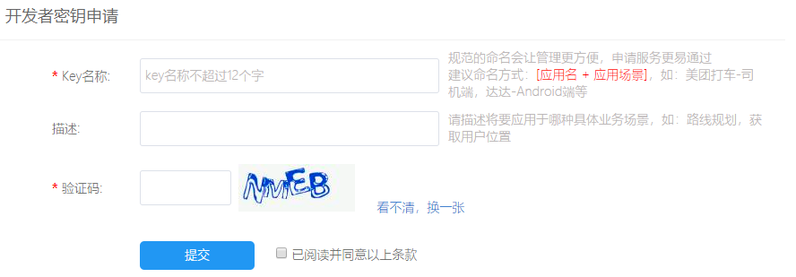

最近在做一个微信小程序地图插件，通过传入起始位置名称和经纬度信息，就可以跳转到路线规划插件页面中，在该页面中，可以根据起始位置查询自驾，公共交通，步行等方式的路线信息，并且在地图上显示路线信息，在这个过程中，用到了微信小程序的组件map和腾讯地图sdk，接下来主要对微信小程序的地图开发进行总结
一、微信小程序地图组件
为了方便微信小程序使用地图的相关功能，微信小程序为我们提供了map组件，通过这个组件，我们可以很简单的引入地图，并且还可以进行个性化地图的开发
1、map组件
微信小程序提供的地图组件，使用该组件只需要在wxml文件中加入下面的代码
<map id="map" longitude="113.324520" latitude="23.099994" scale="14" style="width: 100%; height: 300px;"></map>上面这个例子中，我们只是简单的为该组件传入经纬度信息，并且设置缩放级别，当然，map组件还包括以下一些常用的属性
| 属性 | 类型 | 说明 | 是否必填 |
| longitude | number | 中心经度 | 是 |
| latitude | number | 中心纬度 | 是 |
| scale | number | 缩放级别，取值范围为3-20 | 否 |
| markers | Array.<marker> | 标记点 | 否 |
| polyline | Array.<polyline> | 路线 | 否 |
| include-points | Array.<point> | 缩放视野以包含所有给定的坐标点 | 否 |
| enable-traffic | boolean | 是否开启实时路况 | 否 |
| bindregionchange | eventhandle | 视野发生变化时触发 | 否 |
| bindpoitap | eventhandle | 点击地图poi点时触发 | 否 |
其中，longitude和latitude这两个属性是必须填写的，如果没有填写，地图将无法正常显示，除了上面的属性之外，还有很多其它属性，其它属性请前往微信小程序官方文档进行查看
2、map组件常用的属性介绍
（1）longitude和latitude属性
一般来说，我们需要设置地图的中心经纬度地图才能够正常显示，如果我们传入的是起点经纬度srcLat和srcLng，终点经纬度dstLat和dstLng，如果想要得到其中心坐标，可以通过如下的计算得到：
centerLat = (srcLat + dstLat) / 2
centerLng = (srcLng + dstLng) / 2
通过以下简单的计算，就可以设置出地图的中心经纬度
（2）markers属性
在很多情况下，我们经常需要在地图上添加一些标记点，比如我们希望插件中指定的起点和终点都能够用自定义的图标进行表示，这个时候就可以用到markers属性啦
Page({
data: {
markers: [{
iconPath: "/resources/start.png",
id: 0,
latitude: srcLat,
longitude: srcLng,
width: 50,
height: 50
},
{
iconPath: "/resources/end.png",
id: 0,
latitude: dstLat,
longitude: dstLng,
width: 50,
height: 50
}]
})（3）polyline属性
polyline属性主要指定一系列坐标点，当我们设置了这些坐标点之后，将会从这些坐标点的第一个坐标点连线连到最后一个坐标点，当我们需要在地图上显示起点和终点之间的路线时，就可以用polyline属性进行设置
Page({
data: {
polyline: [{
points: [{
longitude: 113.3245211,
latitude: 23.10229
}, {
longitude: 113.324520,
latitude: 23.21229
}],
color:"#FF0000DD",
width: 2,
dottedLine: true
}]
})关于polyline属性的具体属性介绍，可以查看微信小程序官方文档
3、地图相关的API
为了更好的使用地图的功能，微信小程序也是为我们提供了关于操作地图的相关API
（1）wx.createMapContext(string mapId, Object this)
创建map上下文MapContext 对象
（2）MapContext.getCenterLocation(Object object)
获取当前地图中心的经纬度
（3）MapContext.getRegion(Object object)
获取当前地图的视野范围
（4）MapContext.getScale(Object object)
获取当前地图的缩放级别
（5）MapContext.includePoints(Object object)
缩放视野展示所有经纬度
（6）MapContext.moveToLocation()
将地图中心移动到当前定位点
（7）MapContext.translateMarker(Object object)
平移marker，带动画
使用上面的这些API，可以方便我们对map组件进行一些操作，下面来看个简单的例子
<map id="myMap" show-location />
<button type="primary" bindtap="getCenterLocation">获取位置</button>当点击获取位置时，我们可以通过相关的API进行获取当前的中心位置
Page({
onReady: function (e) {
// 使用 wx.createMapContext 获取 map 上下文
this.mapCtx = wx.createMapContext('myMap')
},
getCenterLocation: function () {
this.mapCtx.getCenterLocation({
success: function(res){
console.log(res.longitude)
console.log(res.latitude)
}
})
}
})4、使用位置服务相关的API
在进行地图开发的时候，我们经常需要使用内置软件，高德地图，腾讯地图这些进行导航，这个时候可以使用相关的位置服务API
（1）wx.openLocation(Object object)
使用微信内置地图查看位置
（2）wx.getLocation(Object object)
获取当前的地理位置、速度
（3）wx.chooseLocation(Object object)
打开地图选择位置
当我们指定一个终点位置，然后希望能够使用内置地图软件进行导航时，可以这样实现
wx.openLocation({
latitude: dstLat,
longitude: dstLng,
name: '终点名称'
})5、使用map组件的一些问题
map组件提供了很多地图的相关功能，但是使用map组件可能会遇到下面这些问题
（1）map组件及微信小程序的API无法提供路线规划，地址转换等功能
可以使用腾讯地图sdk，高德地图sdk，百度地图sdk等进行开发，比如腾讯位置服务为微信小程序提供了基础的标点能力、线和圆的绘制接口等地图组件和位置展示、地图选点等地图API位置服务能力支持，使得开发者可以自由地实现自己的微信小程序产品，通过使用这些服务，再配合map组件，可以开发出具有各种各样功能的地图
（2）map组件的层级问题
map组件的层级被设置为最高，不能通过z-index进行设置，因此使用map组件可能会遮住一些文字图片等内容，可以通过cover-view进行解决，将文字和图片内容嵌套在cover-view中，但是cover-view只能嵌套cover-view和cover-image
二、在微信小程序中使用腾讯地图服务
虽然map组件使我们可以很方便的使用地图，但是map组件只提供了最基本的地图显示功能，同时，微信小程序提供的关于地图的API也只是提供了一些简单的功能，在实际中无法满足我们的各种需求，如果需要使用到路线规划，距离计算等功能，我们可以在微信小程序中接入腾讯地图，高德地图，百度地图等服务，再结合map组件，去实现我们需要的功能
下面以腾讯地图为例来介绍如何在微信小程序中使用腾讯地图服务
1、密钥的申请以及域名的设置
在微信小程序中使用腾讯地图服务大致需要进行如下几个过程：
（1）申请开发者密钥

这里需要填写Key的名称，名称可以根据实际项目应用来命名，申请成功后，会生成一串开发者密钥
（2）开通webserviceAPI服务
a、点击右上角的控制台
b、选择key管理
c、进入设置，勾选webserviceAPI，点击保存
（3）域名的配置
上面的两个步骤都是在腾讯位置服务平台上进行的操作，要进行域名的配置，还需要登录微信公众平台进行域名的配置
在开发小程序时，我们都会使用自己的APPID进行开发，只有配置了相关的域名，在请求时才能向指定的域名发送请求
在“设置” -> “开发设置”中设置request合法域名，添加https://apis.map.qq.com
（4）下载微信小程序JavaScriptSDK
如果完成了上面几个步骤，我们就可以在微信小程序中使用腾讯地图服务啦，在微信小程序中新建一个项目，写入APPID，记得这个APPID需要在微信公众平台中进行了域名的配置，不然会报错
2、实现路线规划
下面举一个简单的小例子，给定起点和终点经纬度，计算出起点和终点之间的路线
首先，需要引入我们刚才下载的JavaScriptSDK
// 引入SDK核心类
var QQMapWX = require('xxx/qqmap-wx.js');进行API核心类的实例化
// 实例化API核心类
var qqmapsdk = new QQMapWX({
key: '开发密钥（key）' // 必填
});接着，我们需要通过调用路线规划的接口direction获取路线，direction接口可以提供驾车、骑行、步行、公交等路线规划功能
direction接口传入的参数如下
（1）mode
String，路线规划选择，可选值：'driving'（驾车）、'walking'（步行）、'bicycling'（骑行）、'transit'（公交），默认：'driving'
（2）from
String格式：lat<纬度>,lng<经度>（例：from: '39.984060,116.307520'）
Object格式：{latitude: 纬度,longitude: 经度}（例：from: { latitude: 39.984060,longitude: 116.307520}）
（3）to
String格式：lat<纬度>,lng<经度>（例：location: '39.984060,116.307520'）
Object格式：{latitude: 纬度,longitude: 经度}（例：to: { latitude: 39.984060,longitude: 116.307520}）
下面给一个根据起点和终点实现路线规划的例子
<!--wxml-->
<map id="myMap" style="width: 100%; height: 300px;"
longitude="{{longitude}}" latitude="{{latitude}}" scale='16' polyline="{{polyline}}" show-location></map>
<!--js-->
// 引入SDK核心类
var QQMapWX = require('xxx/qqmap-wx.js');
// 实例化API核心类
var qqmapsdk = new QQMapWX({
key: '开发密钥（key）' // 必填
});
Page({
data: {
srcLat: '起点经度',
srcLng: '起点纬度',
dstLat: '终点经度',
dstLng: '起点纬度',
latitude: '',
longitude: ''
},
onLoad() {
var _this = this;
//调用距离计算接口
qqmapsdk.direction({
mode: 'driving',//可选值：'driving'（驾车）、'walking'（步行）、'bicycling'（骑行），不填默认：'driving',可不填
//from参数不填默认当前地址
from: {
latitude: _this.data.srcLat,
longitude: _this.data.srcLng
},
to: {
latitude: _this.data.dstLat,
longitude: _this.data.dstLng
},
success: function (res) {
console.log(res);
var ret = res;
var coors = ret.result.routes[0].polyline, pl = [];
//坐标解压（返回的点串坐标，通过前向差分进行压缩）
var kr = 1000000;
for (var i = 2; i < coors.length; i++) {
coors[i] = Number(coors[i - 2]) + Number(coors[i]) / kr;
}
//将解压后的坐标放入点串数组pl中
for (var i = 0; i < coors.length; i += 2) {
pl.push({ latitude: coors[i], longitude: coors[i + 1] })
}
console.log(pl)
//设置polyline属性，将路线显示出来,将解压坐标第一个数据作为起点
_this.setData({
latitude:pl[0].latitude,
longitude:pl[0].longitude,
polyline: [{
points: pl,
color: '#FF0000DD',
width: 4
}]
})
},
fail: function (error) {
console.error(error);
},
complete: function (res) {
console.log(res);
}
});
}
}) 腾讯地图服务还提供了距离计算等其它功能，具体功能可以查看腾讯地图服务官方文档
刚开始接触微信小程序，还有很多东西需要学习，大家一起交流学习呀